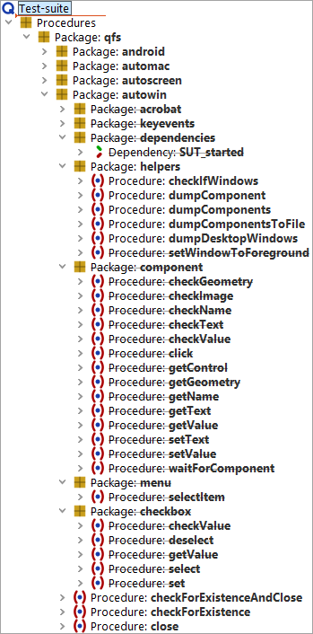

| Version 6.0.3 |
The Microsoft UI Automation is an Accessibility and Test Framework allowing programs to
control the GUI elements of native Windows applications. With QF-Test you can use the framework
in script nodes via the Jython module uiauto
(alternatively de.qfs.UIAuto for Groovy, uiauto for Javascript).
QF-Test provides a package in the standard library with procedures for the most commonly needed interactions with GUI elements for direct and easy use of the API for test development. This chapter describes the standard library package.
You will find the procedures relevant for control of native Windows elements in
the package qfs.autowin. You can see several procedures marked as
deprecated. They have been replaced by normal nodes of the win engine of QF-Test,
and the procedures in the qfs.autowin package will not be further maintained.
However, you can continue using them as they are. If you encounter problems, for example with
scaled windows applications, it is advised to switch to the win engine.
|
|  | ||
|
| Figure 48.1: UI Automation procedures in the standard library | ||
When developing tests for native windows applications you generally need to perform the following steps:
The application to be tested may but does not necessarily have to be started via QF-Test.
When starting the application via QF-Test the client process started is listed in the QF-Test menu »Clients« and can also be stopped via QF-Test.
Please use the procedure qfs.autowin.checkForExistence
to check whether the application was started.
You will find an example for the start of an application in subsection 48.2.1.
Before you can set up a test you need to get an overview of the GUI elements
of the application. You may either use the procedure
qfs.autowin.helpers.dumpComponents to print the
GUI elements to the QF-Test terminal or
qfs.autowin.helpers.dumpComponentsToFile to write them
to a file.
The procedure qfs.autowin.helpers.DumpDesktopWindows allows
you to list the titles of all open windows of the desktop.
qfs.autowin.helpers.dumpComponents prints the name (Name),
the class (ClassName), the compontent type
(ControlType) and the Id (AutomationId) of the GUI elements, provided they
were implemented for the respective GUI element.
All the GUI elements visible on the Windows desktop are organized in a tree structure with the desktop as the root element. When calling the dump procedure you need to specify the window for which to list the GUI elements. Nesting of the components is represented via indentation.
Note The procedure dumpComponents() prints its output to the QF-Test terminal displayed in the botton part of the QF-Test window. The output is not displayed in the terminals which can be opened separately (client terminal and scripting terminals).
Please find an example in subsection 48.2.2.
The procedure qfs.autowin.helpers.dumpComponent
allows you to print further information for single GUI elements,
including a list of the methods available for the element as well as
attribute values.
All procedures of the standard library package preforming actions on native
Windows applications need to determine the respective GUI element as the
first step and then perform the action in a second step. You find the
procedures in the package qfs.autowin.component.
Because all procedures use qfs.autowin.component.getControl
to identify the GUI element, the parameters of this helper procedure are valid
for all the procedures performing an action on a GUI element.
The following parameters (and combinations) are valid (in the order of evaluation):
qfs.autowin.helpers.dumpComponent shows
the name and the numeric value of the respective ControlType. In order to
identify a GUI element via its ControlType you usually need to specify its name
or its index (relative to the GUI elements in the window of that ControlType), too,
except there is just the one GUI element of that ControlType in the window.
You will find procedures in the package qfs.autowin.component
of the standard library for the most common actions. You are free to enhance the
package. We recommend to use a separate test-suite for the enhancement and not to
change the qfs.qft since we continuously update the standard library and ship
a new version with every QF-Test release.
qfs.autowin.component.click
qfs.autowin.component.waitForComponent
qfs.autowin.checkForExistence
qfs.autowin.component.setText
qfs.autowin.keyevents provides procedures for
replaying the keyboard events ENTER, TAB and DELETE. The procedure
qfs.autowin.keyevents.sendKey lets you replay any key
like a single letter, a digit, a function key, etc, also combined with the modifiers SHIFT, CTRL and ALT.
The event is replayed to the component with the focus in the given window.
qfs.autowin.component.getText
qfs.autowin.component.getGeometry
qfs.autowin.component.checkText
qfs.autowin.component.checkGeometry
qfs.autowin.component.checkImage
png format. The procedure determines the
screen coordinates of the element via qfs.autowin.component.getGeometry.
The actual comparison is done via the procedure getPositionOfImage()
of the qfs.autoscreen package of the standard library.
qfs.autowin.menu.selectItem
| Last update: 9/6/2022 Copyright © 1999-2022 Quality First Software GmbH |